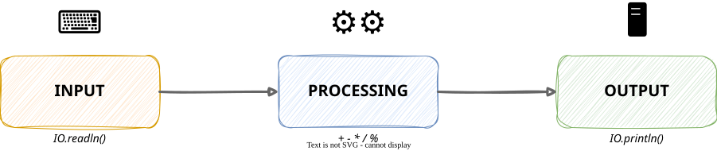

COSC120: Introduction to Computer Science I
IO.readln, convert numeric input with Integer.parseInt+, -, *, /, %)IO.println and String concatenationIO.readln() is confusing to a user, and fix it with a printed prompt — either as a separate IO.println/IO.print or built into IO.readln("...")You already know IO.readln, IO.println, variables, and arithmetic.
You must have a plan before you start typing.
Every program you’ve written so far, no matter how small, does the same three things:

| Stage | Question to ask | Java tools you already know |
|---|---|---|
| Input | What data does the program need, and where does it come from? | IO.readln(), IO.readln("prompt: ") |
| Processing | What computation turns that data into the answer? | + - * / %, Integer.parseInt(...) |
| Output | What exactly should be printed, and in what format? | IO.println(...), + for concatenation |
Note
Not every program needs all three. A program that just prints a message has output only — zero input, zero processing. But most real programs use all three, in that order.
Problem: Ask the user how many minutes they studied. Print how many full hours that is, and how many minutes are left over.
Notice the shape: one block to get data, one block to compute, one block to print. That order almost never changes.
Tip
Before you write any code on this worksheet, write the three comments //INPUT, //PROCESSING, //OUTPUT in your file first. Then fill in each block one at a time.
Note
This worked example uses IO.readln("Minutes studied: ") — a prompt built right into the read. The worksheet below builds up to that style in stages; you’ll see why it’s the one worth defaulting to.
IO.readln doesn’t require a prompt — but leaving one out makes the program confusing to use.
Separate print, then read
The prompt appears on its own line; the user’s answer appears on the next line.
For every problem below, start by writing // INPUT, // PROCESSING, and // OUTPUT as comments in your file, in that order. Then fill in the code under each one. If a problem has no input or no processing, leave that comment in place with nothing under it — that’s fine, and worth noticing.
Important
Watch the prompt style change as you go: Problems 2-4 use no prompt at all (read silently), Problems 5-7 print a prompt with IO.println/IO.print before reading, and Problems 8-10 build the prompt into IO.readln("...").
Problem 1 — Output only. Print a 3-line “business card” with no input at all:
Name: Ada Lovelace
Course: COSC120
Semester: Fall 2026What goes under // INPUT and // PROCESSING? Nothing — and that’s the point. Not every program needs every stage.
Problem 2 — Input and output, no processing. Read the user’s name and their favorite color with IO.readln() — no prompt, just read. Print them back in a sentence.
Typed input, in order: Ada, then green. Program prints:
Ada's favorite color is green.Try running it and typing the two values without seeing any prompt first. Notice how disorienting that is — you’re about to fix it.
The // PROCESSING comment stays in your file, but there’s nothing under it — you’re just rearranging the input into a sentence, not computing anything.
Problem 3 — One computation. Read two integers, still with no prompt. Print their sum.
Example: typed 4, then 9 → prints Sum: 13
Problem 4 — Two computations, same inputs. Read the length and width of a rectangle (as integers), no prompt. Print both the area and the perimeter.
Example: typed 5, then 3 → prints Area: 15 and Perimeter: 16
This is the last no-prompt problem. Did you find yourself wanting to add a prompt already? That instinct is correct — next up.
Problem 5 — Using % and / together. Ask the user for a number of cents (an integer): print a prompt with IO.println (or IO.print), then call IO.readln() on its own to get the value. Print how many whole quarters that makes, and how many cents are left over.
Example: 87 cents → Quarters: 3 and Leftover cents: 12
Problem 6 — Multiplication. Same style — a separate IO.println/IO.print before each IO.readln(). Ask for the number of miles driven and the cost per mile in cents (both integers). Print the total trip cost, in cents.
Example: 12 miles at 12 cents/mile → Total cost (cents): 144
Notice each prompt sits on its own line, and the value you type shows up on the line below it.
Problem 7 — Three inputs, one computation. Still a separate IO.println/IO.print before each of the three IO.readln() calls. Ask for three quiz scores (integers). Print their sum and their average (integer division — the result will truncate, and that’s expected here).
Example: 90, 80, 100 → Sum: 270 and Average: 90
What would happen with 90, 85, 100? Compute the average by hand first — does the printed value surprise you? Why?
This is the last problem with the prompt on its own line. Next, you’ll fold it into IO.readln("...") directly.
Problem 8 — Digit extraction. From here on, build the prompt directly into the read: int n = Integer.parseInt(IO.readln("Number: "));. Ask for a two- or three-digit whole number this way. Print its last digit, and print the number with its last digit removed.
Example: 247 → Last digit: 7 and Without last digit: 24
Hint: one of these uses %, the other uses /.
Compare this to Problems 5-7: same information reaches your program, but the prompt and the typed value now share one line.
Problem 9 — Percentage of a value. Use IO.readln("...: ") with an inline prompt for both reads. Ask for a bill amount in cents and a tip percentage (both integers). Print the tip amount in cents and the total (bill + tip) in cents.
Example: bill 2000 cents, tip 15% → Tip (cents): 300 and Total (cents): 2300
Hint: bill * percent / 100 computes a percentage using only integers.
Problem 10 — Synthesis: receipt. Use IO.readln("...: ") with an inline prompt for all three reads. Ask for an item’s price in cents, the quantity purchased, and the sales-tax percentage (three integers). Compute and print an itemized receipt: the subtotal, the tax amount, and the total — each on its own line.
Example: price 500 cents, quantity 3, tax 8% →
Subtotal (cents): 1500
Tax (cents): 120
Total (cents): 1620This one has three inputs and three separate processing steps that build on each other — subtotal feeds into tax, and both feed into total. Write out all three //INPUT reads first, then work through //PROCESSING top to bottom before printing anything.